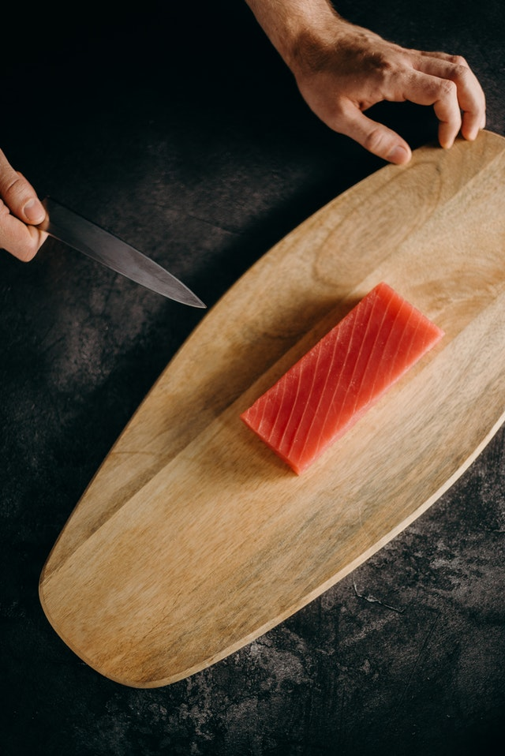
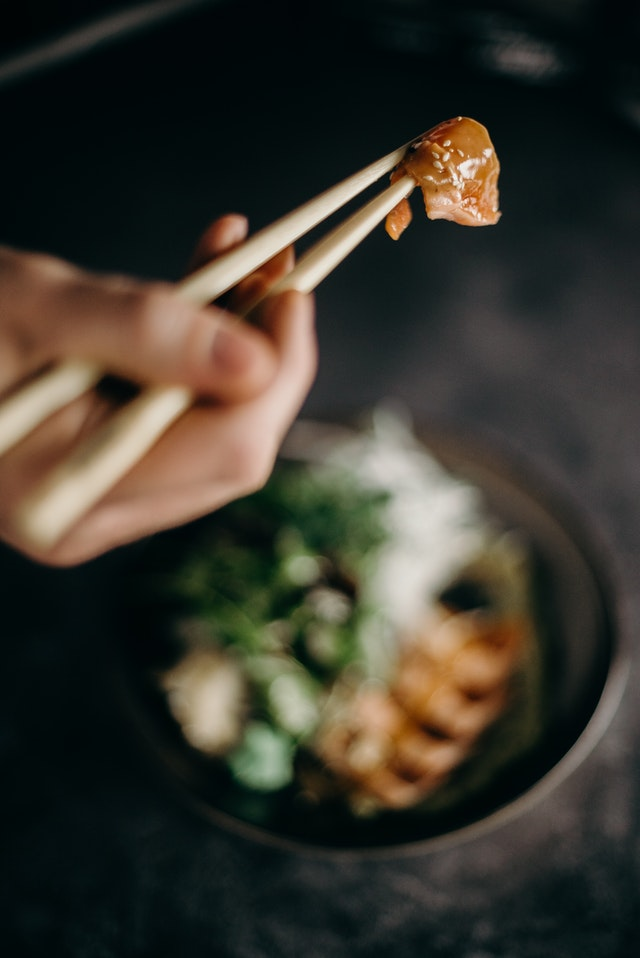
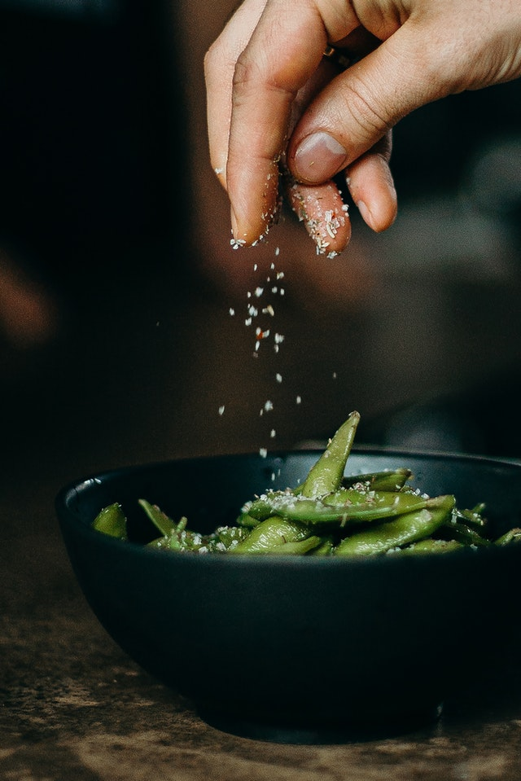
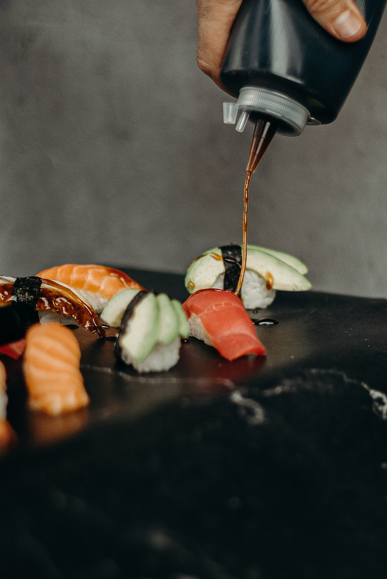
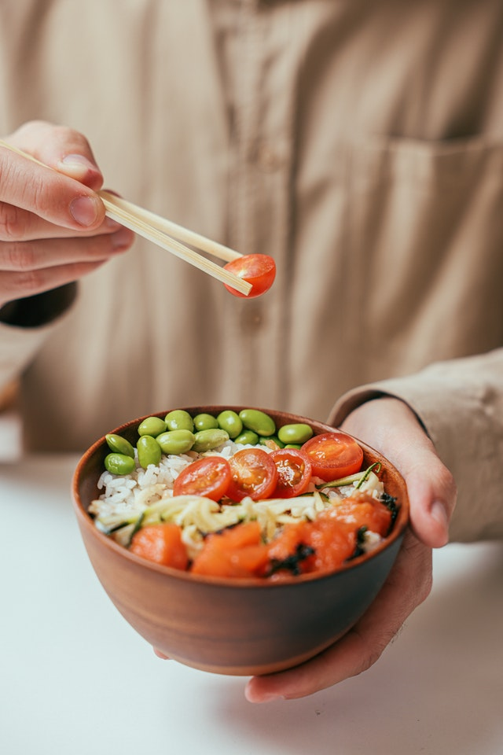
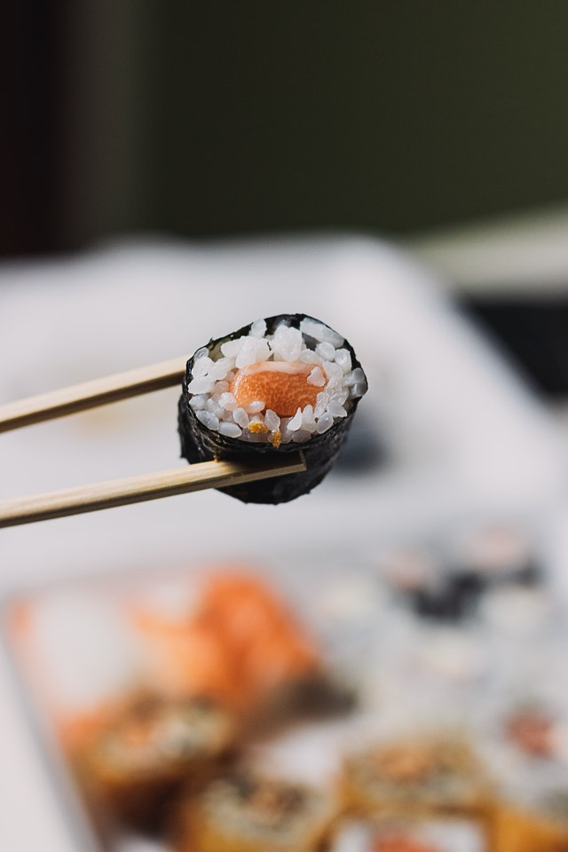
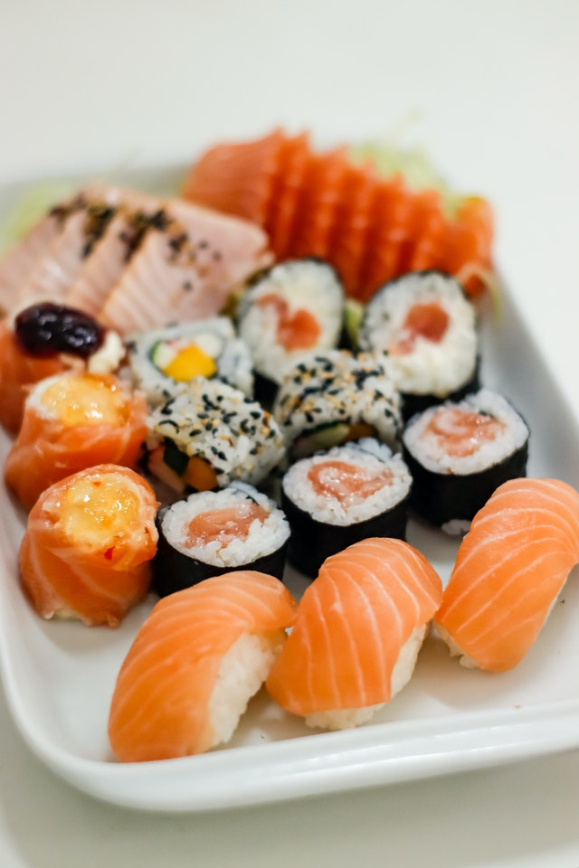

Authentic Japanese cuisine crafted with the finest Mediterranean catch, in the heart of Sicily.
We visited Palermo a couple of years ago and were surprised to find that there were no sushi restaurants around. We decided this needed to be changed — and a few years later, Sushi Palermo was born. Our main goal is to cater to tourists, families, and corporate events. Our fish is caught fresh in the Mediterranean on a daily basis and served straight to you.






